Física
Temas
- Magnitudes fisicas
- Movimiento de los cuerpos
- Leyes de Newton
- Gravitación Universal
- Trabajo, energía y potencia
- Hidrostática
- Electricidad
- Electromagnetismo
- Ondas
- Efecto invernadero
- Teoría de la relatividad

Magnitudes físicas
Una magnitud física es una propiedad que puede medirse y expresarse mediante un número y una unidad.
Tipos
Magnitudes fundamentales: no dependen de otras magnitudes.
| Magnitud | Unidad SL | Símbolo |
|---|---|---|
| Longitud | metro | m |
| Masa | Kilogramo | kg |
| Tiempo | segundo | s |
| Temperatura | Kelvin | K |
| Corriente eléctrica | ampere | A |
| Cantidad de sustancia | mol | mol |
| Intensidad luminosa | candela | cd |
Magnitudes derivadas: se obtienen combinando magnitudes fundamentales.
Ejemplos:
- Velocidad -> m/s
- Aceleracion -> m/s 2
- Fuerza -> newton (N)
- Energía -> joule (J)
- Potencia -> watt (W)
- Presión -> pascal (Pa)
Escalares y vectoriales
Escalar: solamente tiene magnitud.
Masa = 5 kg
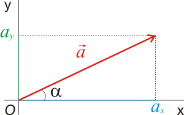
Vectorial: tiene magnitud, dirección y sentido.
Velocidad = 20 m/s hacia el norte.
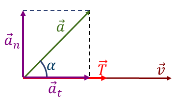
Movimiento de los cuerpos
La cinemática estudia el movimiento sin preocuparse por las causas que lo producen.
Conceptos importantes
Posición: lugar donde se encuentra un objeto.
Distancia: longitud total recorrida.
Desplazamiento: cambio de posición entre el punto inicial y final.
Velocidad:
v = Δt / Δx
donde:
- v = velocidad
- Δx = desplazamiento
- Δt = tiempo
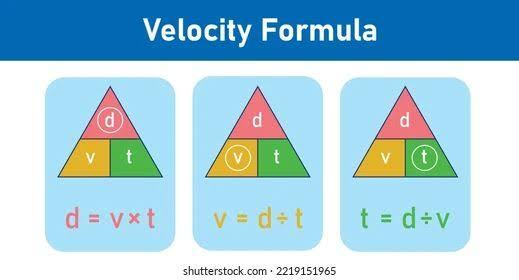
Aceleración:
a = Δv / Δt
Indica qué tan rápido cambia la velocidad.
Movimiento rectilíneo uniforme (MRU)
La velocidad permanece constante.
x = x0 + vt
Ejemplo: un automóvil que avanza constantemente a 20 m/s.
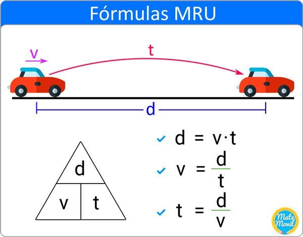
Movimiento rectilíneo uniformemente acelerado (MRUA)
Existe una aceleración constante.
v = v0 + at
x = x0 + v0t + (1/2)at2
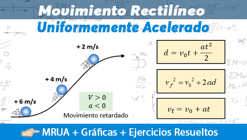
Caída libre
Es el movimiento producido únicamente por la gravedad.
En la tierra:
g = 9.8 m/s2
Un objeto en caída libre aumenta su velocidad aproximadamente 9.8 m/s cada segundo.
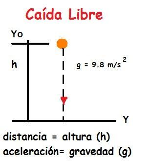
Leyes de Newton
Las leyes de Newton explican cómo las fuerzas producen cambios en el movimiento.
Primera ley - Ley de la inercia
Un cuerpo permanece en reposo o en movimiento rectilíneo uniforme si la fuerza neta sobre él es cero.
Σ F = 0
Ejemplo: un libro sobre una mesa permanece quieto porque las fuerzas están equilibradas.

Segunda ley
La aceleración de un objeto depende de la fuerza neta y de su masa.
F = ma
Donde:
- F = fuerza en newtons
- m = masa en kg
- a = aceleración en m/s2
Ejemplo:
a = 20 / 5 = 4 m/s2

Tercera ley - Acción y reacción
A toda fuerza ejercida sobre un objeto corresponde otra fuerza de igual magnitud y dirección opuesta ejercida por el objeto.
Ejemplo: cuando saltas, tus piernas empujan el suelo y el suelo ejerce una fuerza hacia arriba sobre ti.
Algunas fuerzas
- Peso
- Normal
- Fricción o rozamiento
- Tensión
- Fuerza elástica
- Fuerza aplicada

Gravitación universal
Newton propuso que todos los cuerpos con masa se atraen entre sí.
La fuerza gravitatoria es:
F = G(m1m2/r2)
Donde:
- F = fuerza gravitatoria
- G = constante gravitacional
- m1, m2 = masas
- r = distancia entre sus centros
G = 6.674 x 10−11 (el -11 es exponente) N m2 / kg2

¿De qué depende?
La fuerza aumenta cuando:
- aumentan las masas;
- disminuye la distancia.
Y disminuye cuando aumenta la distancia.
Gravedad terrestre
El peso de un objeto se calcula:
P = mg
Masa ≠ peso
- Masa -> cantidad de materia -> kg.
- Peso -> fuerza gravitatoria -> N.

Por ejemplo, una persona puede tener la misma masa en la Tierra y la Luna, pero su peso será diferente porque la gravedad es diferente.
Trabajo, energía y potencia
Trabajo
En física, existe trabajo cuando una fuerza produce un desplazamiento.
Si la fuerza y el desplazamiento tienen la misma dirección:
W = Fd
Unidad:
J = N x m
Ejemplo:
Si empujas una caja con 50N durante 4 m:
W = 50(4) = 200J
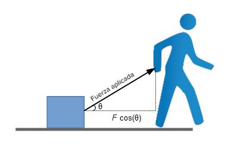
Energía
La energía es la capacidad de producir cambios o realizar trabajo.
Energía cinética
Es la energía asociada al movimiento.
Ec = (1/2)mv2
Energía potencial gravitatoria
Depende de la altura:
Ep = mgh
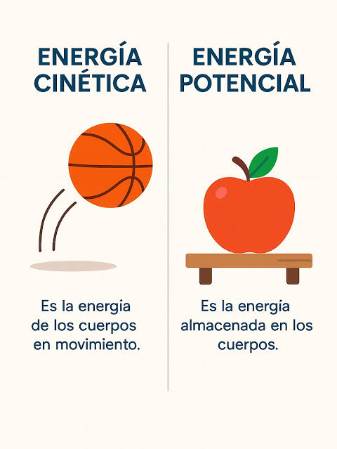
Energía mecánica
Em = Ec + Ep
En condiciones ideales, la energía mecánica se conserva.
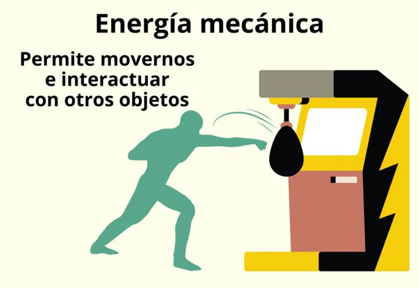
Potencia
Indica qué tan rápido se realiza un trabajo.
P = W / t
Unidad:
Watt = J / s
Una máquina más potente puede realizar el mismo trabajo en menos tiempo.
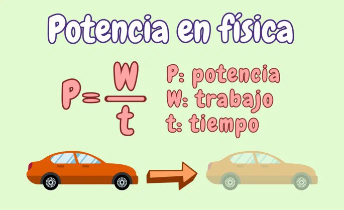
Hidrostática
La hidrostática estudia los líquidos en reposo.
Densidad
Relaciona la masa con el volumen:
p = m / V
Unidad:
kg/m3
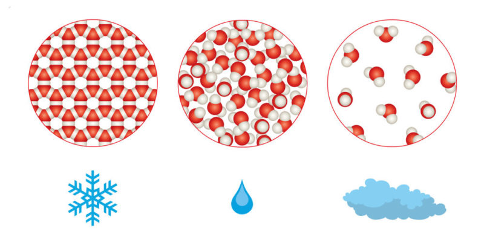
Presión
Es la fuerza ejercida sobre una superficie:
P = F / A
Unidad:
Pa = N/m2

Presión en un líquido
La presión aumenta con la profundidad:
P = pgh
Si se considera además la presión atmosférica:
Ptotal = Patm + pgh
Por eso la presión del agua es mayor cuanto más profundo estás.
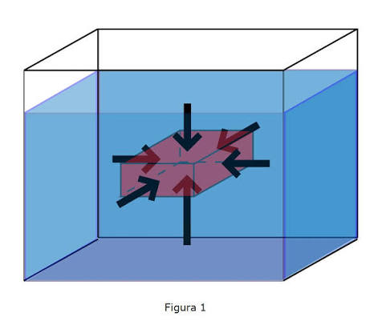
Principio de Pascal
Una presión aplicada a un fluido confinado se transmite en todas direcciones.
Se utiliza, por ejemplo, en:
- frenos hidráulicos
- elevadores hidráulicos
- prensas hidráulicas

Principio de Arquímedes
Un objeto sumergido en un fluido recibe una fuerza hacia arriba llamada empuje.
E = pfgV
Esto explica por qué algunos objetos flotan.
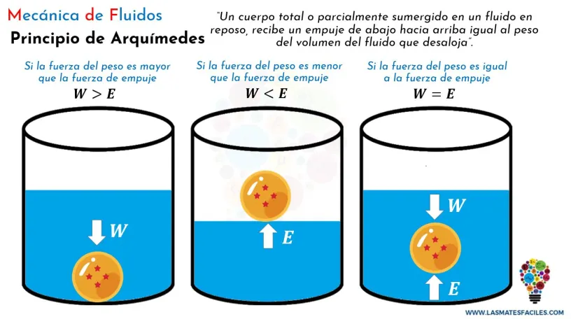
Electricidad
La electricidad está relacionada con las cargas eléctricas y su movimiento.
Existen dos tipos de carga:
- positiva (+)
- negativa (-)
Cargas iguales se repelen y cargas diferentes se atraen.
Corriente eléctrica
Es el flujo de carga eléctrica.
I = Q / t
Unidad: ampere (A).
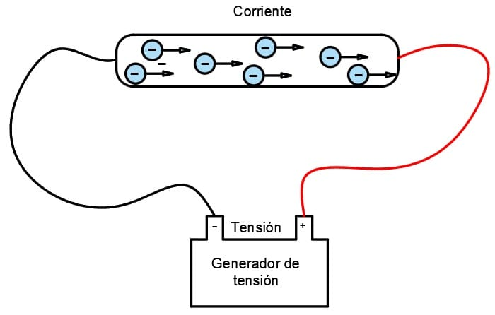
Voltaje
Es la diferencia de potencial eléctrico entre dos puntos.
Se mide en voltios (V).
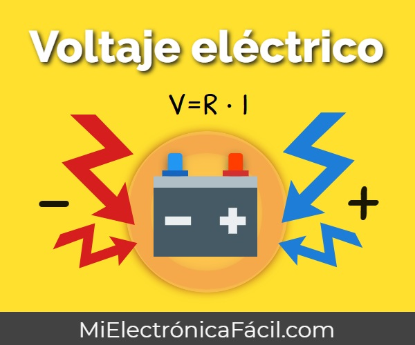
Resistencia
Es la oposición al paso de la corriente.
Se mide en ohmios (Ω).
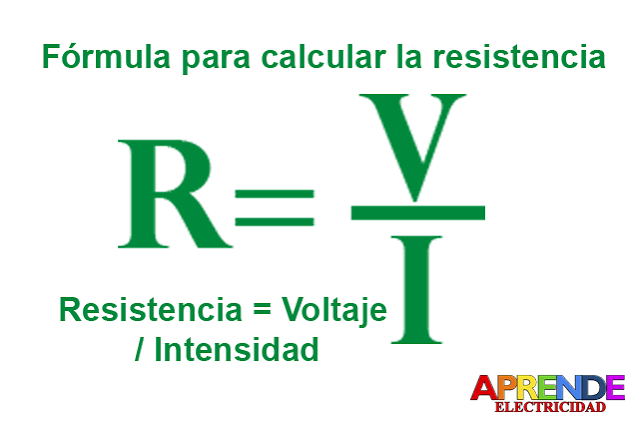
Ley de Ohm
V = IR
Por lo tanto:
I = V / R
R = V / I
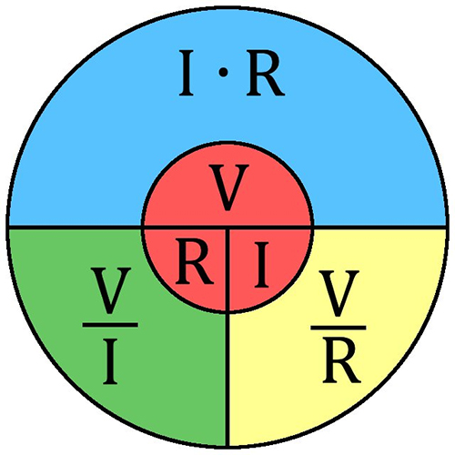
Potencia eléctrica
P = V I
También:
P = I2 R
o
P = V2 / R
Circuitos
Serie: los componentes están conectados uno después de otro.
Paralelo: existen diferentes caminos para la corriente.
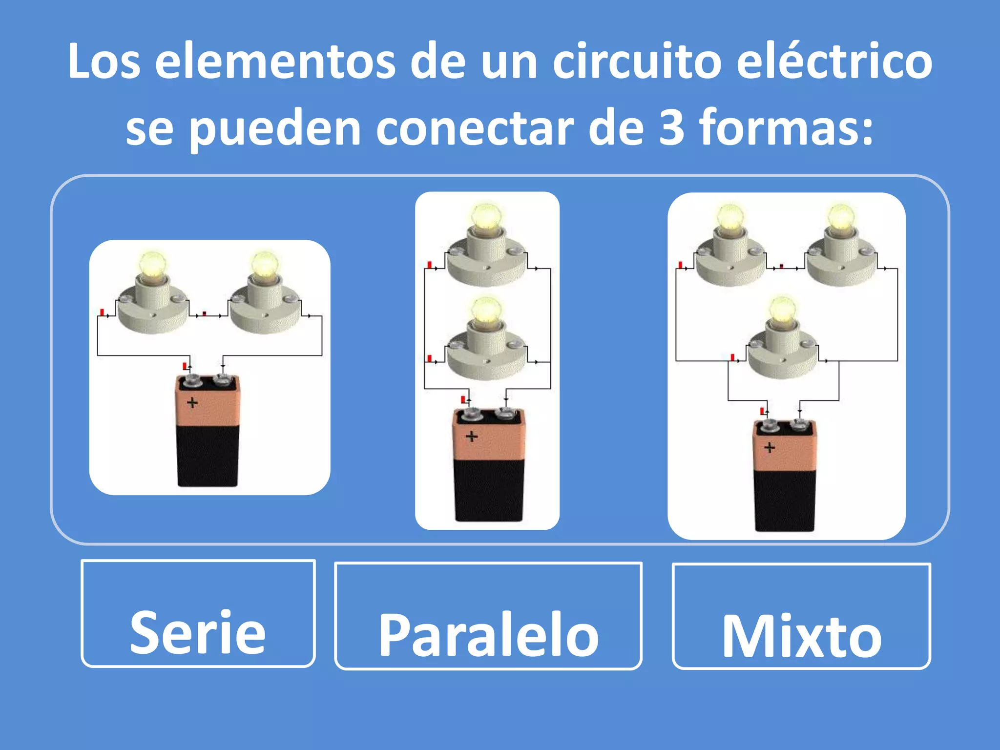
Electromagnetismo
El electromagnetismo estudia la relación entre electricidad y magnetismo.
Una corriente eléctrica puede producir un campo magnético.
Por ejemplo, cuando circula corriente por una bobina, puede producirse un campo magnético considerable.
Campo magnético
Es la región donde actúan fuerzas magnéticas.
Se representa mediante líneas de campo.
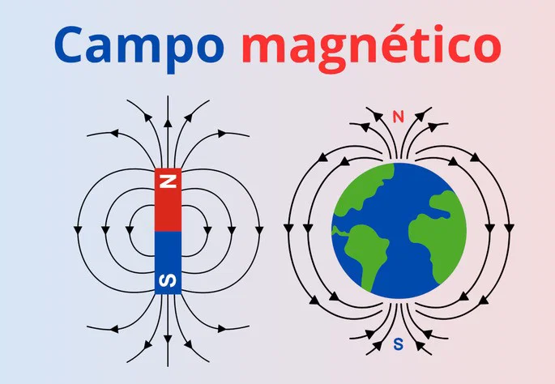
Electromagnetismo
Una de las ideas fundamentales es:
Las cargas eléctricas en movimiento producen campos magnéticos.
Y también ocurre lo contrario:
Un campo magnético variable puede producir una corriente eléctrica.
Este segundo fenómeno se conoce como inducción electromagnética.
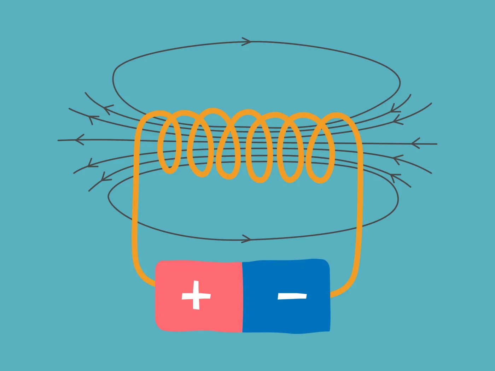
Aplicaciones
El electromagnetismo permite construir:
- motores eléctricos;
- generadores;
- transformadores;
- altavoces;
- electroimanes;
- muchos dispositivos electrónicos.
Motor eléctrico
Transforma:
energía eléctrica -> energía mecánica
Generador
Hace lo contrario:
energía mecánica -> energía eléctrica
Ondas
Una onda es una perturbación que se propaga transportando energía.
Ejemplos:
- sonido;
- ondas del agua;
- luz;
- ondas sísmicas.
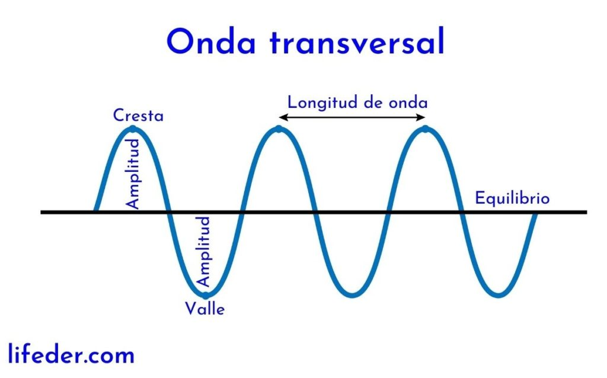
Elementos de una onda
Longitud de onda (λ): distancia entre dos puntos equivalentes consecutivos.
Frecuencia (f): número de ciclos por segundo.
Se mide en hertz:
Hz = 1 / s
Período (T): tiempo que tarda en realizarse un ciclo.
T = 1 / f
Amplitud: máximo desplazamiento respecto al equilibrio.
Velocidad de una onda
v = λf

Ondas mecánicas
Necesitan un medio material para propagarse.
Ejemplo:
sonido.

Ondas electromagnéticas
No necesitan un medio material.
Ejemplo:
luz.
Por eso la luz puede viajar por el vacío.
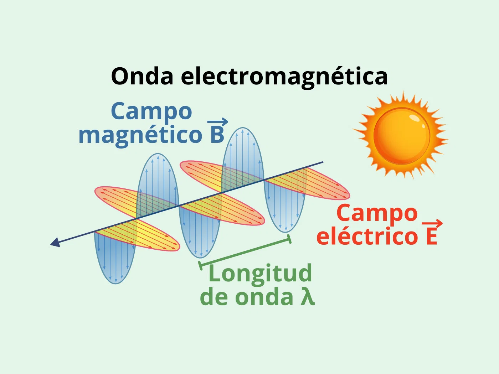
Fenómenos ondulatorios
- Reflexión
- Refracción
- Difracción
- Interferencia
Efecto invernadero
El efecto invernadero es un fenómeno natural que permite que la Tierra mantenga una temperatura adecuada para la vida.
La Tierra recibe energía del Sol. Parte de esa energía es absorbida por la superficie terrestre y posteriormente se emite como radiación infrarroja.
Algunos gases atmosféricos absorben parte de esa radiación y vuelven a emitirla.
Gases de efecto invernadero
Entre ellos:
- dióxido de carbono (CO2)
- metano (CH4);
- vapor de agua;
- óxido nitroso (N2O)
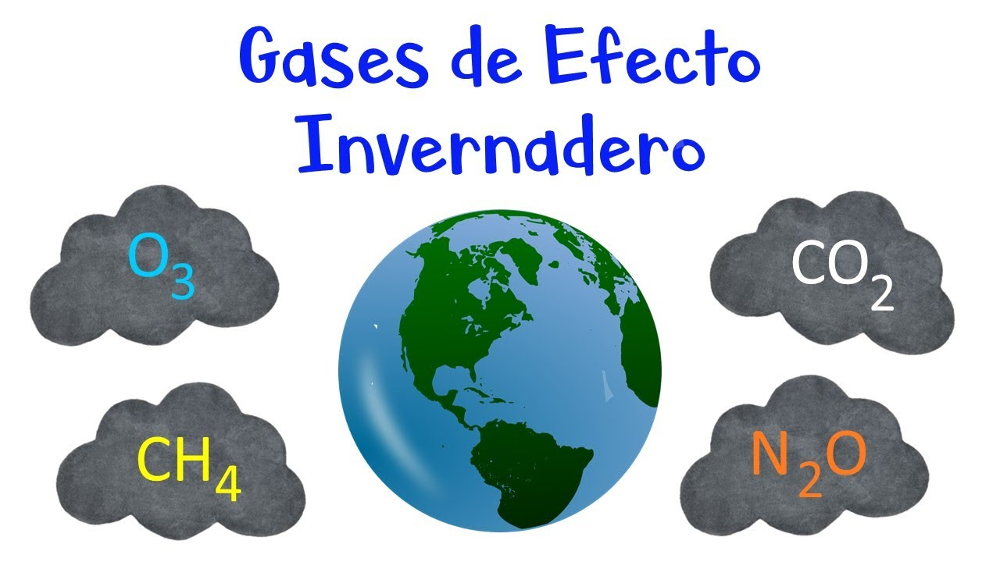
Efecto invernadero natural
Es necesario para mantener la temperatura de la Tierra.
Problema actual
Las actividades humanas han aumentado las concentraciones de varios gases de efecto invernadero, especialmente CO₂ y metano.
Esto intensifica el efecto invernadero y contribuye al calentamiento global.
Entre las fuentes importantes están:
- quema de combustibles fósiles;
- deforestación;
- agricultura y ganadería;
- procesos industriales.
Teoría de la relatividad
La teoría de la relatividad fue desarrollada principalmente por Albert Einstein.
Se divide en:
- Relatividad especial.
- Relatividad general.
Relatividad especial
Fue publicada en 1905.
Se basa en dos ideas principales:
- Las leyes de la física son las mismas para todos los observadores que se mueven a velocidad constante unos respecto a otros.
- La velocidad de la luz en el vacío es constante
c = 3.0 x 10 8(8 es exponente) m/s
Independientemente del movimiento de la fuente o del observador.
Equivalencia masa-energía
Una de las ecuaciones más famosas es:
E = mc2
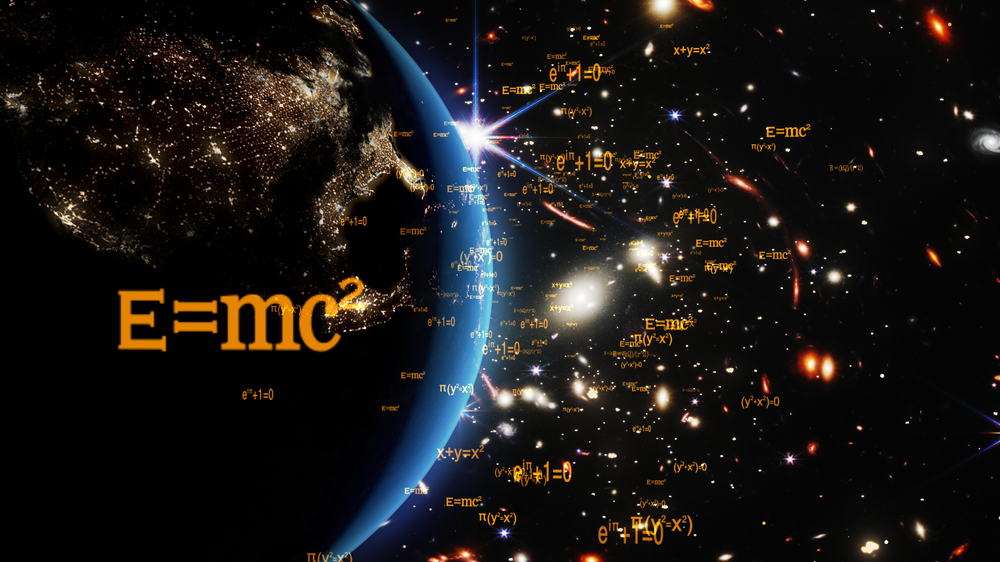
Significa que la masa puede considerarse una forma de energía y que una pequeña cantidad de masa corresponde a una cantidad enorme de energía.
Dilatación temporal
Según la relatividad especial, el tiempo puede transcurrir a diferentes ritmos para observadores que se mueven a velocidades muy altas respecto unos de otros.
A velocidades cercanas a la de la luz, estos efectos se vuelven importantes.
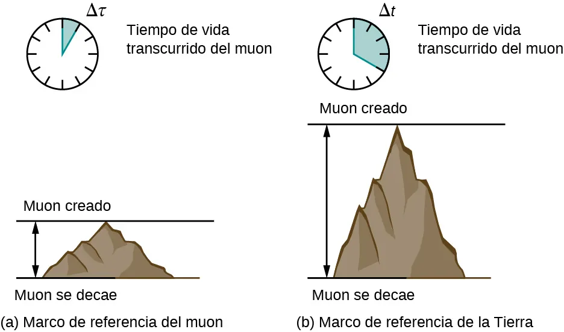
Relatividad general
Publicada en 1915.
Describe la gravedad de una manera diferente a Newton.
Einstein propuso que la masa y la energía deforman el espacio-tiempo.
Los objetos se mueven siguiendo esa geometría.
Una forma sencilla de imaginarlo es pensar en una tela que se deforma cuando colocas una bola pesada sobre ella. Es solamente una analogía: el espacio-tiempo real tiene más dimensiones y no es literalmente una tela.
La relatividad general predice fenómenos como:
- agujeros negros;
- ondas gravitacionales;
- desviación de la luz por la gravedad;
- dilatación gravitacional del tiempo.
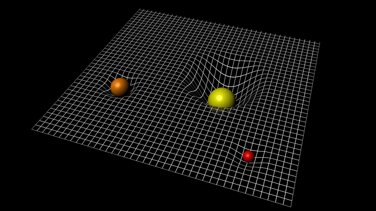